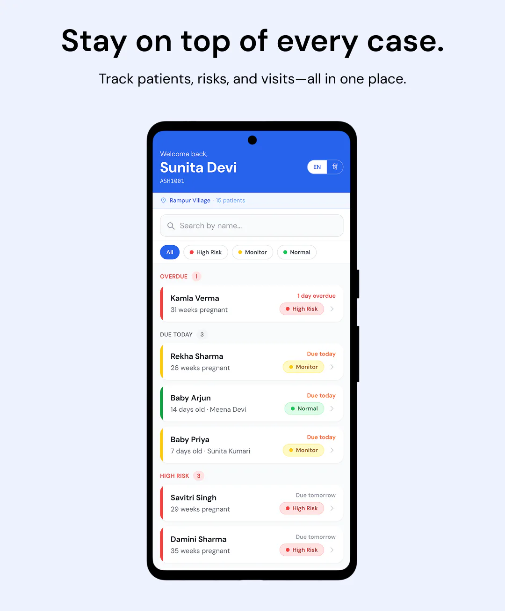
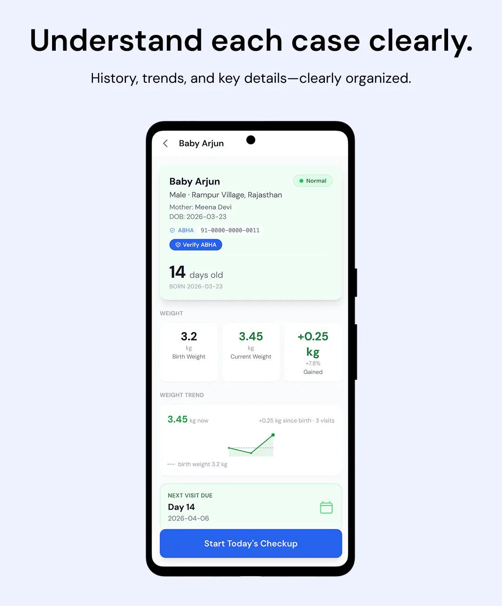
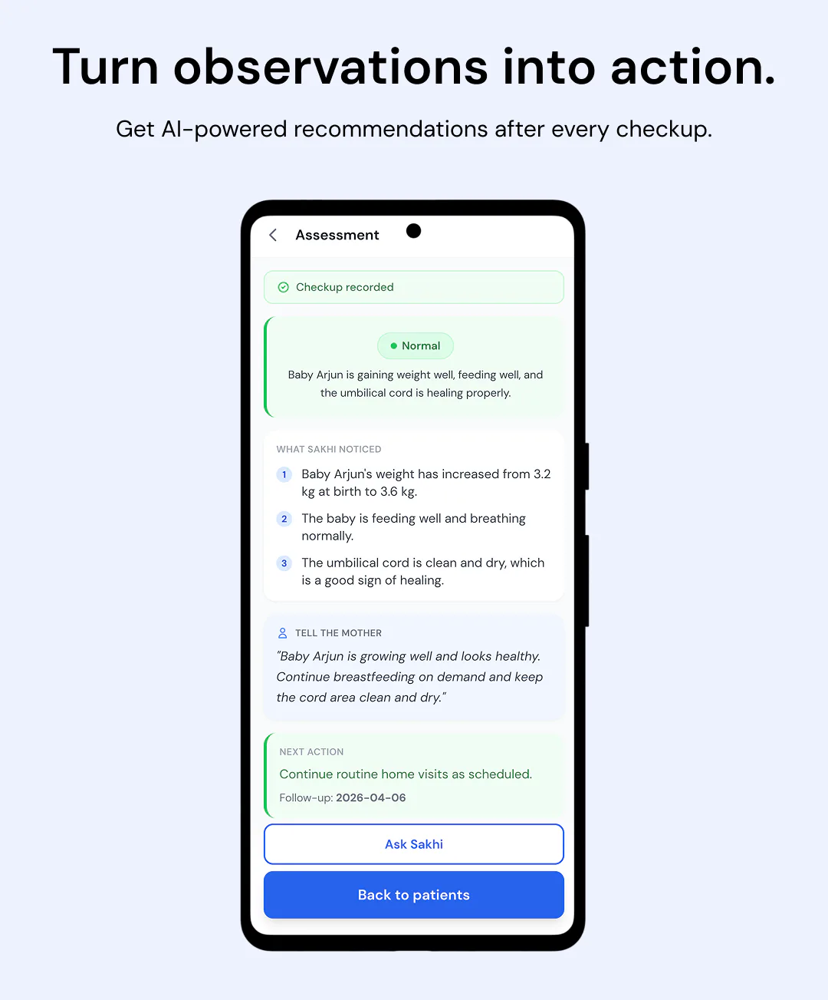
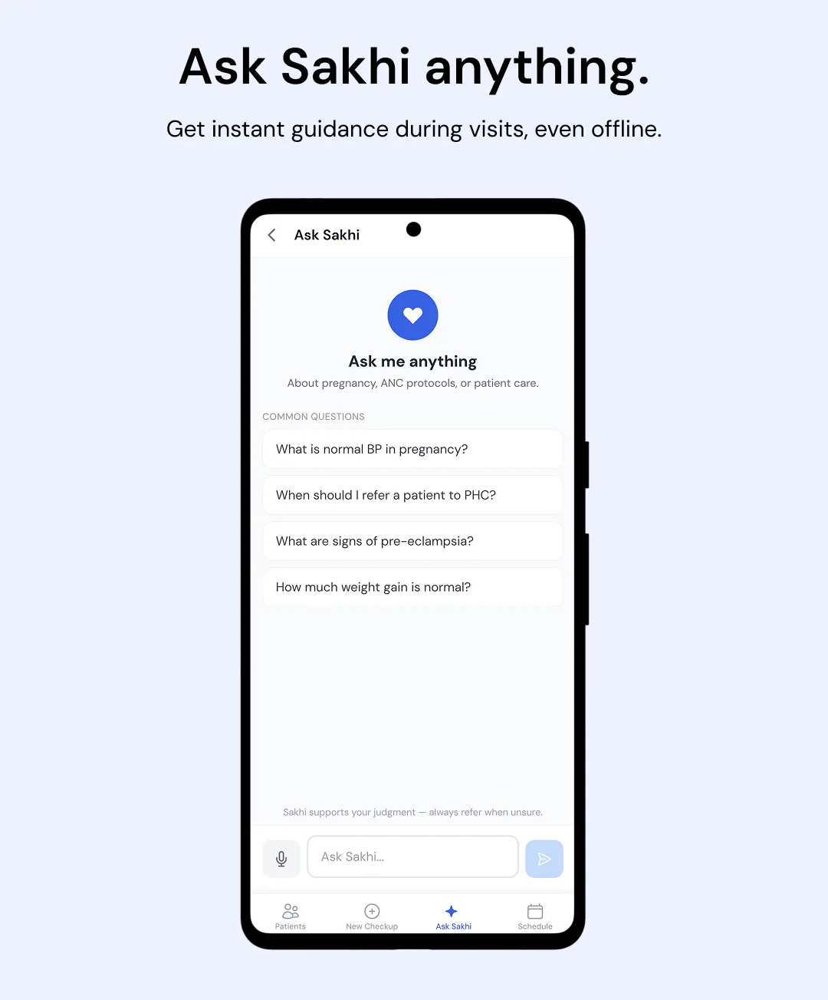

india's maternal mortality ratio is 97 per 100,000 live births, concentrated in rural areas. about a million ASHA workers make life-critical referral decisions alone in the field. they can take BP, check fetal heart rates, and observe newborns, but have no tool to tell them when a reading warrants emergency referral vs. routine follow-up.
sakhi (sakhī, hindi for "female friend") is a mobile-first clinical companion built for ASHA workers. built for the MedGemma Impact Challenge, it gives grounded decision support for antenatal and newborn visits when connectivity and senior clinicians aren't available.
three constraints shaped how i built it:
- offline: villages often have no signal. the app shell caches locally, patient data stays on-device, and MOHFW rule-based triage runs without connectivity. when signal returns, pending visits sync and AI results replace local ones in-place.
- voice-first: during a home visit, speaking is faster than typing, especially for workers more comfortable talking than filling forms. checkup flows and ask sakhi support voice input.
- multi-lingual: impact at scale means the product can't be English-only. shipped with English and Hindi across the UI and AI responses; embeddings and clinical guidelines indexed for multilingual retrieval.
a day with sakhi
you're an ASHA worker. fifteen households in your village. three visits due today. one mother already overdue.
you open sakhi.

the list is already sorted. overdue at the top. high risk in red. monitor in yellow. normal in green. kamla verma is thirty-one weeks pregnant, high risk, one day late. you don't flip through a register to find her. she's the first thing you see.
you tap in.

one screen: who this patient is, how far along they are, weight or vitals over time, when the next visit falls. ABHA linked if they're on the national health ID. everything you need before you knock on the door.
you walk to the house. no signal. doesn't matter.
you run the checkup on your phone: vitals, symptoms, what you're observing. speak instead of type if that's faster. hindi if that's how you think. the form is two steps, not a notebook.
then sakhi answers.

not a wall of medical text. a risk level: green, yellow, or red. what sakhi noticed in what you entered. what to tell the mother, in plain language. the next action. a follow-up date. the same screen whether the answer came from the AI model or the offline rule engine on your phone. offline is not a worse version of the product.
walking to the next house, a question hits you. what BP is normal at this stage? when do i refer to the PHC?

you ask sakhi. pull in the patient you're about to see if you want context. tap a common question or just speak it. the schedule keeps the rest of the week honest: overdue, today, coming up. so when you're juggling dozens of families, nothing buried in the back of a notebook slips through.
that's the loop. open → patient → checkup → answer → next household.
sakhi isn't here to replace ASHA workers. it's here to assist her in doing what she does best.
millions of decisions like kamla's happen every year with no clinician on call. sakhi is my attempt to put backup in every ASHA worker's pocket: the same workflow online or off, the same language she thinks in, a clear answer at the end of every visit. if you want the engineering behind it, the fine-tuned model, guideline retrieval, and offline architecture are in technical details below.
try the demo · kaggle writeup · fine-tuned model
| Layer | Technology |
|---|---|
| Frontend | React + Vite + Tailwind CSS |
| Mobile | Capacitor (Android APK) |
| Backend | FastAPI (Python) |
| AI model | Custom QLoRA fine-tuned MedGemma 1.5 4B IT → GGUF Q4_K_M (~2.5 GB), served via Ollama on Hugging Face Spaces |
| RAG | ChromaDB + paraphrase-multilingual-MiniLM-L12-v2 over 10 WHO/MOHFW guideline PDFs |
| Offline | Workbox PWA shell + MOHFW rule-based triage in localAssessment.js |
| i18n | i18next (English + Hindi) |
| Deployment | Vercel (frontend) + Hugging Face Spaces (backend + model) |
ai stack
primary model: QLoRA fine-tuned MedGemma 1.5 4B IT on ~6,800 maternal/neonatal examples, targeting Indian clinical risk factors (severe anaemia, eclampsia patterns) and JSON schema compliance for production reliability.
fine-tuning pipeline (3 Kaggle notebooks, zero budget):
- QLoRA fine-tune → LoRA adapter on HF Hub
- merge LoRA → convert to GGUF →
Q4_K_Mquantization → GGUF on HF Hub - serve via Ollama on a Hugging Face Space
training: LoRA rank 16, 2×T4 on Kaggle, ~4.2 hrs, 0.89% trainable params, final loss 2.13.
evaluation: 75 labelled MOHFW/WHO-aligned maternal triage cases. primary safety metric is false negative rate for high risk.
model cascade (auto-fallback): fine-tuned MedGemma → Gemma 3n E4B IT → Gemini 2.5 Flash Lite → Llama 3.1 8B. missing API keys are skipped automatically.
offline architecture
- app shell cached by Workbox service worker, opens with no connectivity
- patient data persists to localStorage, namespaced by ASHA ID
- offline triage implements MOHFW rules locally (BP ≥ 140/90 → red, Hb < 7 → red, weight < 1.5kg → red, etc.) and returns the identical response shape as the AI endpoint
- sync queue replays pending submissions on reconnect; AI result replaces the local one in-place
engineering notes
backend/model.pyis the only file that calls any AI model- offline fallback returns the exact same JSON shape as the AI endpoint, no special-casing in the UI
- ABHA (Ayushman Bharat Health Account) OTP verification proxied server-side
- HF Space kept warm with a
/healthping every 5 minutes (free tier sleeps after 10 min idle) - temperature 0.2 across all providers for clinical consistency